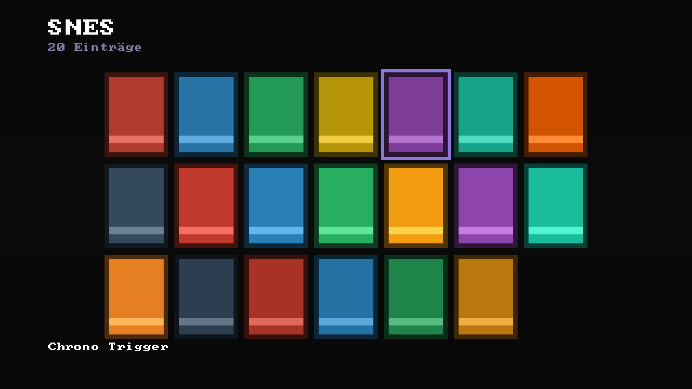
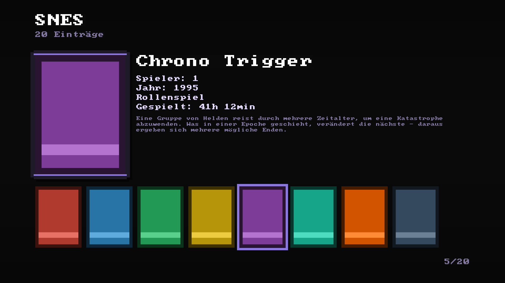
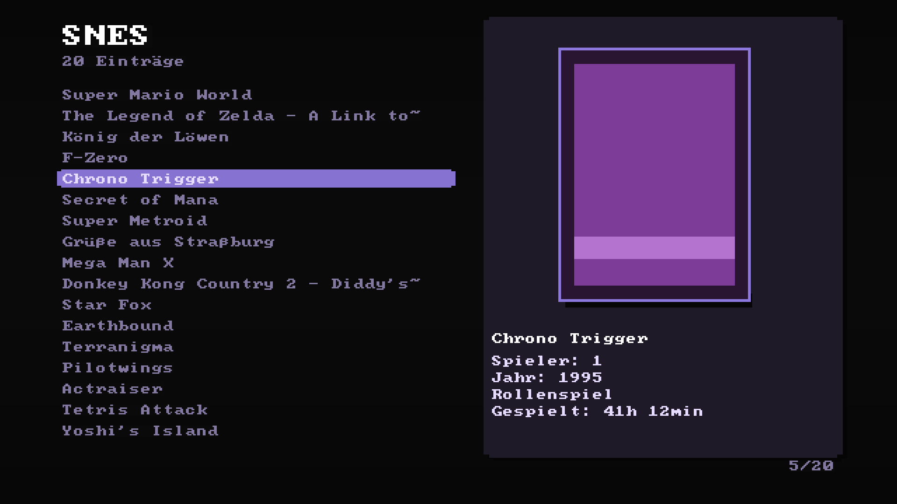
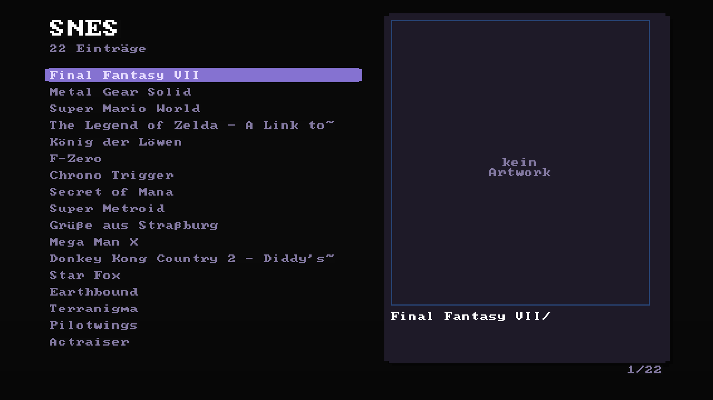
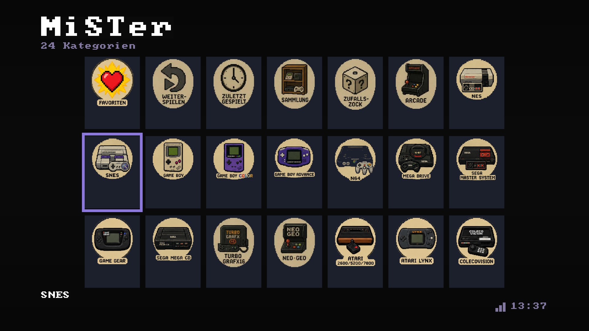

MiSTer Custom Frontend
Your own menu for the MiSTer FPGA – with achievements,
statistics and a few secrets to find.
statistics and a few secrets to find.
RA
RetroAchievements
★
Trophy Room
▦
Collections
?
Secrets
WHAT IT LOOKS LIKE






